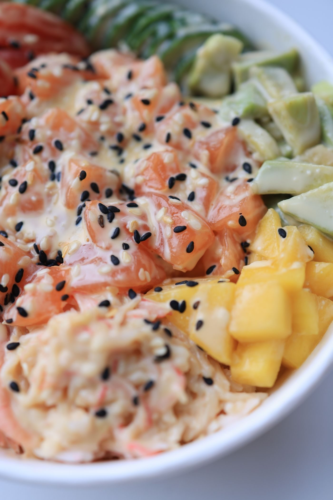
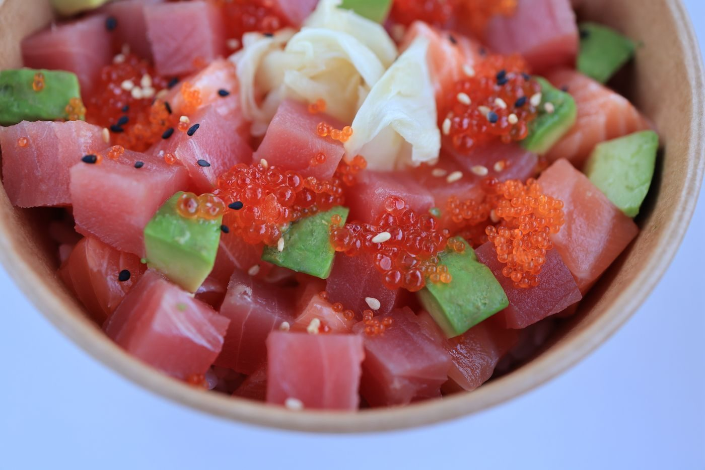

Bay St. Louis, Mississippi
Yamato Steak House Of Japan is a casual Japanese steakhouse and sushi bar in Bay St. Louis. Call to ask about hibachi, sushi and sashimi, the Volcano Roll, D. Hibachi Chicken, or steak and shrimp combinations.
Yamato Steak House Of Japan is a casual Japanese steakhouse and sushi bar in Bay St. Louis. Its offerings include hibachi, sushi and sashimi, the Volcano Roll, D. Hibachi Chicken, and steak and shrimp combinations. Reservations, takeout, and delivery are available per research. The own site is a carousel plus generic specialty blurbs and hours with no menu, prices, or ordering details, so call with questions.


603 US-90, Bay St. Louis, MS 39520
Sunday, Monday, Wednesday, Thursday 11:00 AM to 9:15 PM; Friday and Saturday 11:00 AM to 10:00 PM